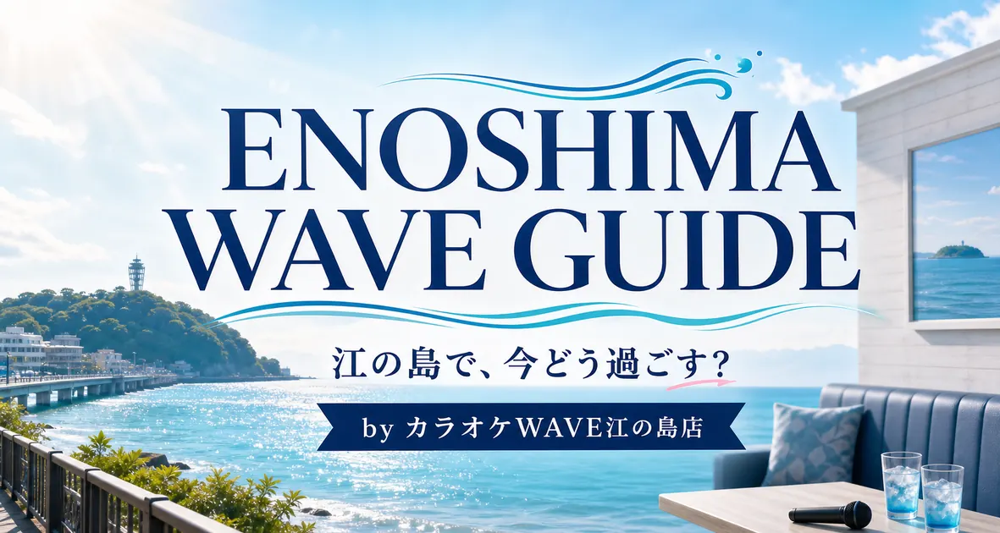

LP Production — Kamakura / Shonan
鎌倉・湘南のLP制作
藤沢・茅ヶ崎・逗子の店舗・会社の1ページを、15万円から。
導線デベロッパーは、神奈川県鎌倉市腰越を拠点にLP（ランディングページ）を制作しています。鎌倉・藤沢・茅ヶ崎・逗子など湘南エリアの店舗・教室・サロン・工務店・会社の1ページを、構成・原稿からデザイン・実装・公開前確認まで、同じ担当者が進めます。打ち合わせは、ビデオ通話とメールによるオンラインが基本です。
鎌倉市腰越を拠点に、湘南エリアのご相談を受けています
拠点は神奈川県鎌倉市腰越です。鎌倉市・藤沢市・茅ヶ崎市・逗子市をはじめ、湘南エリアの店舗・会社からのご相談を歓迎しています。
打ち合わせは、ビデオ通話とメールによるオンラインを基本に進めます。手元の資料や今のサイトを見ながら、誰に何を伝えるか、どの順番で見せるかを決めていきます。
全国からのご相談にも、同じ進め方で対応しています。
湘南エリアの店舗・会社で、LPが役立つ場面
LPは、目的を1つに絞り、予約・問い合わせまでを1ページで案内するページです。
| 業態 | LPのゴール | 1ページに入れること |
|---|---|---|
| 飲食店・店舗 | 来店・席予約 | 営業時間・地図・駐車場、店内の写真 |
| 教室・スクール | 体験申込 | 体験の流れと当日の持ち物 |
| 美容・整体・サロン | 予約（Web・LINE） | 料金・所要時間・施術者の顔 |
| 工務店・リフォーム・設備工事 | 見積・相談・電話 | 施工例と対応エリア |
| 会社・法人向けサービス | 資料請求・商談・見積依頼 | 法人が依頼を判断する条件 |
業態ごとの構成は店舗・地域サービスLP制作と店舗・地域サービスLPに必要な要素の解説に詳しく書いています。
江の島・湘南エリアの制作例
企画・構成・実装の紹介であり、集客や売上の成果を示すものではありません。
- カラオケWAVE江の島店（自社運営）：店内の過ごし方やアクセス、江の島観光の記事をまとめた自社運営の店舗サイト。初めて訪れる方が、利用シーンや行き方を確認できる構成です。公開サイト：https://karaokewave-enoshima.jp/
- 上の園商事：湘南エリアの原状回復工事・小規模リフォーム。大家・管理会社と一般家庭で異なる依頼内容を整理しました。
- 株式会社MGAP：湘南・鎌倉・横浜エリアのリフォームとハウスクリーニング。「よくあるお困りごと」から該当ページへ進める導線にしました。公開サイト：https://mgap.co.jp/

全9件の実績は制作実績にまとめています。掲載事例には自社運営のサイトを含みます。
料金と含まれる範囲
LP制作は、1サービス・1ページで150,000円（税別）から（税込165,000円〜）です。対象作業・総額・予定納期は、ご発注前に見積書でお伝えします。
基本料金に含むもの
- 目的・既存資料の確認
- 構成設計と原稿編集
- スマホ対応のデザイン・実装
- 修正2回
- 表示・リンク・相談導線の公開前確認
- GA4の計測設定
別途確認するもの
- ページ追加、大幅な原稿追加・方針変更
- 写真撮影、動画・イラスト等の制作
- 特殊なフォーム、予約・外部システム連携
- サーバー・ドメイン等の契約費用
- 公開後の更新・改善、広告配信・運用
公開後の改善運用（30,000円（税別）から・30日単位）は任意で、LP制作のみでもご依頼いただけます。問い合わせ数、売上、検索順位の保証はありません。
詳しい範囲はLP制作の料金と範囲、支払・キャンセル条件は特定商取引法に基づく表記をご確認ください。
進め方
最初の相談から公開まで、担当は変わりません。
- フォームで相談：業種、用途、希望時期をお知らせください。
- 範囲と見積もり：資料をオンラインで確認し、総額と予定納期をご案内します。
- 制作と確認：構成、原稿、画面をオンラインで確認しながら進めます。
- 最終確認・公開：スマホ表示、相談導線、計測まで確認します。
よくある質問
- 鎌倉・湘南エリア以外からも依頼できますか。
- はい。全国オンラインで対応しています。拠点は神奈川県鎌倉市腰越で、打ち合わせはビデオ通話とメールを基本に進めます。
- 打ち合わせはどのように進めますか。
- ビデオ通話とメールによるオンラインが基本です。現在のホームページやSNS、サービス資料を見ながら、誰に何を伝えるかを整理します。
- 料金はいくらですか。月額費用はかかりますか。
- LP制作は1サービス・1ページで150,000円(税別)からです。LP制作のみでご依頼いただけ、当社との月額契約は必須ではありません。公開後の改善運用（30,000円(税別)から・30日単位）は任意です。サーバー・ドメイン等の契約費用は制作費に含まれないため、別途確認します。